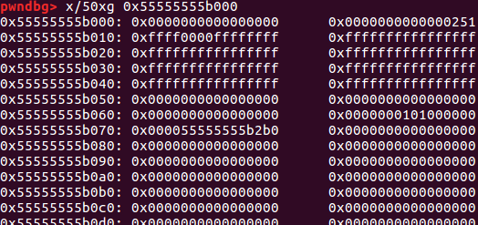
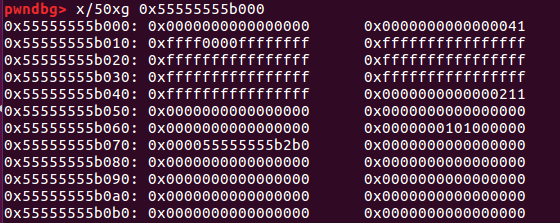
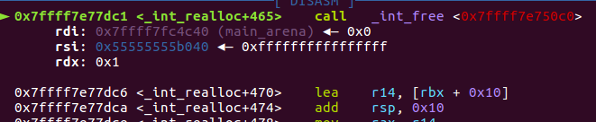
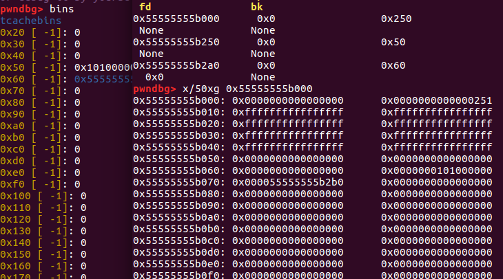
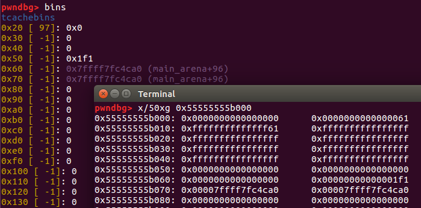

一道pwnable.tw新上的题，环境是libc2.29，在另一道题re-alloc的基础上开启了PIE和RELRO，可以通过这道题学习一些libc2.29、realloc的相关特性
分析程序
程序主要有三个功能，malloc申请内存保存数据、realloc重新分配内存以及free释放内存，
堆指针由一个全局数组保存，而三种操作中都限制了数组范围只有两个，且free后将数组指针清0，此外，程序还限制了申请空间的大小不大于0x78
前置知识
realloc
realloc函数在头文件<stdlib.h>中
1 | void *realloc(void *ptr,size_t new_size); |
ptr是将要进行重新分配的内存空间指针（必须在堆中），new_size是想要分配空间的大小
realloc主要特性：
1.对ptr进行判断，如果ptr为NULL，则相当于malloc(new_size)
2.如果ptr不为NULL，会查看ptr是否指向堆上的空间，如果不是会给出异常错误realloc invalid pointer；如果ptr在堆中，则查看new_size的大小，如果new_size为0，相当于free(ptr)，返回NULL；如果new_size小于原空间大小（后面记为old_size)，则ptr中的数据可能会丢失；
如果new_size>old_size，会查看ptr指向的空间后面还有没有足够大小的连续空间，如果有的话，继续分配更多的空间，如果没有则将free(ptr)，然后malloc(new_size)，并将内容拷贝到新内存；如果new_size==old_size，则相当于没做什么。
以上为网上和结合本人实际应用的大概总结，不过在对于new_size>old_size时其实有些模棱两可，通过这道题我的发现，如果当new_size<old_size，会有可能进行free(ptr+new_size)。
如图，一个old_size=0x250的空间：

我们将原size为0x250的空间重新分配为0x30的空间，跟踪进入realloc，首先会改写ptr+new_size的内容，使其拥有chunk head：

继续调试跟踪，发现调用了free将新的空间释放：

libc-2.29
在libc-2.29中加入了很多新的防护机制，主要参考自EX师傅的文章：
http://blog.eonew.cn/archives/1167
总结一下：
1.tcache double free难以利用
2.增加了对prev_size的检测，会判断prev_size与要合并的chunk的size是否相等
3.unsorted bin attack难以利用
4.无法进行house of force
此外应该还有其他的机制，今后会继续研究
限于（咸鱼）笔者水平太差，做过的2.29版本的pwn题不是很多，遇到的主要利用办法有：
1.通过多次malloc和free将同一chunk分别进入tcache和fastbins，造成“double free”
2.通过修改tcache struct（tcache虽然被限制了，但是还是一个很好的利用方向）
3.可以利用largebin attack代替unsortedbin attack
漏洞利用
这道题主要利用了当realloc的size参数为0时可以将指针free掉，且没有将指针清0从而导致UAF，但难点在于程序环境为libc2.29且全局数组只能保存两个指针，并且程序不能申请大于0x78的空间（加大了泄露libc的难度）
泄露libc基址
libc-2.29版本存在tcache首先会在heap开头位置创建一个tcache结构体来维护：
1 | typedef struct tcache_perthread_struct |
其前0x40字节为对应大小tcache的数量，后0x200个字节为指针数组，指向tcache_entry链表的头部指针，针对tcache结构体的利用参考：https://xz.aliyun.com/t/6828
这样我们可以利用uaf申请空间到tcahce sturct（需要爆破一字节），然后将tcache的数量改为大于7的数字（由于是无符号比较，-1即可），从而使得tcache不可用，这样free后的chunk就不会进入tcache：

然后再利用realloc的特性，重新分配tcache struct这部分空间，可以将多余大小的空间释放掉，使其进入unsorted bin，如果控制好重新分配空间的大小，就足以将unsorted bin链表头写入tcahce指针数组对应的位置：

这样如果我们再次申请空间（注意有些size不可用）就会从unsorted bin中申请，恰好可以利用unsorted bin链表头对于libc的偏移量，爆破一字节使得tcache指针指向_IO_2_1_stdout_的位置，这样我们就可以修改其结构体内容从而泄露libc基址
getshell
由于我们已经劫持了tcache struct接下来的事情就顺理成章，修改指针指向free_hook将其修改为system然后就可以执行system(“/bin/sh”)来getshell了
完整exp：
1 | from pwn import * |
总共爆破了两字节，（实际上我很快就成功了，运气不错，不知道是不是因为这两个字节有什么联系，但肯定不是一一对应）